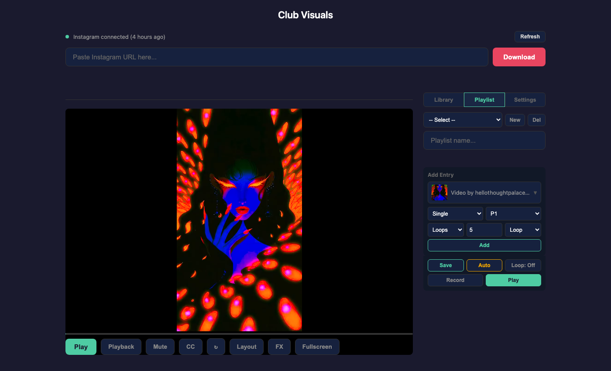
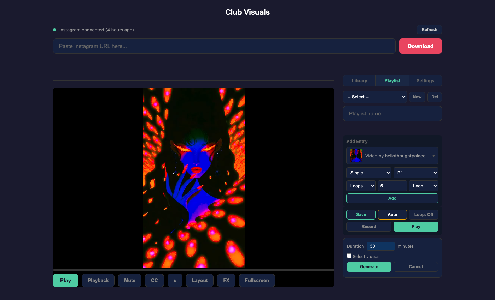

Playlists
Playlists let you build cue lists where each entry specifies a video, view mode, mirror preset, loop mode, and duration. Playlists auto-advance through entries and are saved as JSON for reuse across sessions.

08-playlist-tab.png).Creating a playlist
- Click the Playlist tab in the right sidebar
- Click New to start a fresh playlist
- Type a name in the playlist name field
Adding entries
Each playlist entry defines a complete visual treatment. To add one:
- Click the video picker to open the dropdown and select a video (thumbnail previews are shown). The selected video also loads in the player so you can preview it.
- Choose a view mode: Single, Dual, 3x, 4x, or 8x
- Choose a preset: P1 through P32
- Set the duration type: Loops (number of full video loops) or Seconds (wall-clock time)
- Set the duration value
- Choose the loop mode: Loop or Bounce
- Click Add
Changing the view or preset selector immediately previews the change in the player, so you can see the treatment before adding it.
The same video can appear multiple times in a playlist with different treatments. For example:
- Dual mode, preset 5, loop, 10 loops
- 8x mode, preset 22, loop, 30 seconds
- 8x mode, preset 7, bounce, 5 loops
Entry list
Each entry in the list shows the video name, a compact info string (e.g. "8x P5 3L B" = 8x view, preset 5, 3 loops, bounce), and a delete button.
- Drag and drop entries to reorder them — grab and drag an entry to a new position
- Click an entry to preview it in the player (outlined in red while previewing)
- Click the × button to remove an entry
Saving and loading
- Click Save to persist the playlist to the server as a JSON file
- Use the playlist dropdown at the top to load a previously saved playlist
- Click Del to delete the current playlist (a confirmation dialog appears)
Playlists are saved in the playlists/ directory as JSON files named by a slug derived from the playlist name. They survive server restarts and page reloads.
Playing a playlist
- Click Play to start from the first entry
- The playlist indicator bar appears above the video showing: current entry number, view/preset info, and loop progress
- Entries auto-advance when their duration expires
- Click Next in the indicator bar to skip to the next entry
- Click Stop to exit playlist mode
During playback, the current entry is highlighted with a green border in the entry list.
Playlist looping
Click Loop: Off to toggle playlist looping. When on, the playlist restarts from the first entry after the last one completes. The button shows Loop: On when active.
Auto-generating playlists

09-playlist-autogen.png).Click Auto to reveal the auto-generate form:
- Set the target duration in minutes (1–480, default 30)
- Optionally tick Select videos to choose which videos to include. An "All" / "None" bar appears with checkboxes on each library item.
- Click Generate
The generator:
- Fetches duration metadata for the selected (or all) videos
- Shuffles videos randomly
- For each entry: picks a random view mode, a random preset from that mode's curated set, and 1–5 random loops
- Fills entries until the total estimated time exceeds the target
- Names the playlist "Auto Nmin"
A status message shows the result: e.g. "15 entries, ~32 minutes total". Click Save to keep the generated playlist.